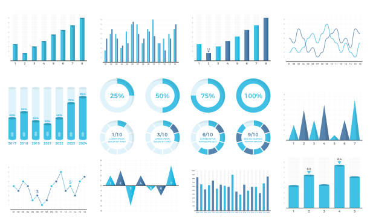

"Midiendo el cambio, informando el futuro"
TU OPINION CUENTA

DONDE ENCONTRARNOS
- EcoMetrics
- Avd El Escribano 14 A
- Badajoz
| ÁMBITO | KPI | UNIDAD | VALOR (2024 aprox) |
|---|---|---|---|
| Medio Ambiente | Emisiones de CO2 globales | Gt CO2 | 36,8 |
| Temperatura media | °C | 1,2 | |
| Hielo ártico perdido | % | 40 | |
| Industria | Coste económico de desastres climáticos | Miles de M€ | 280 |
| Energía renovable en la matriz global | % | 29 | |
| Salud | Muertes por calor extremo | Miles de casos | 489 |
| Aumento de casos de malaria | % | 15 | |
| Agricultura | Reducción rendimiento de maíz/trigo | % | 10 |
| Energía | Inversión global en renovables | Miles de M€ | 495 |
| Participación carbón en electricidad | % | 35 | |
| Mitigación | Países con compromisos climáticos (NDCs) | % emisiones | 92 |